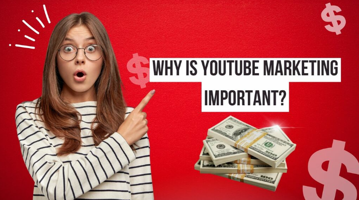
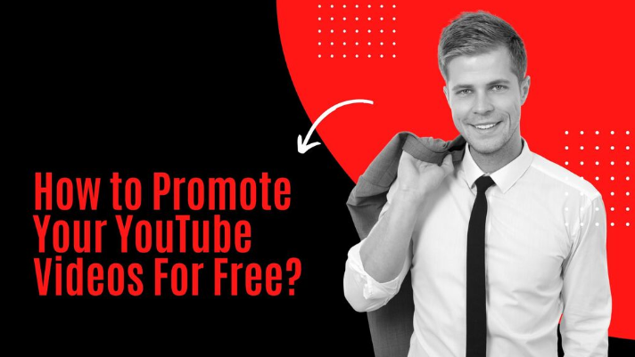
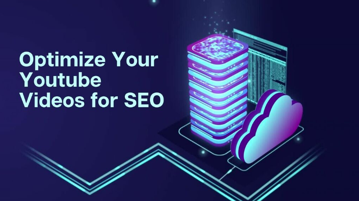

Looking for free YouTube video promotion? YouTube, the most popular video-sharing website, is a
terrific location to promote your material. But with so many videos out there, how do you stand out? So
here we are. We'll show you how to advertise your films for free on YouTube.
With our proven tactics,
you'll have a loyal video audience in no time.
Why is YouTube Marketing Important?

YouTube Marketing is important because it is a great way to tap
into the minds of your target audience. It is also an effective way to reach out to a wider audience and
build brand awareness. Additionally, it provides a valuable medium to reach out to a wider audience and
build brand awareness. YouTube has become the platform of choice for marketers, influencers, and content
creators alike. This can be attributed to its wide range of features that make it easy for users to
create and share videos. The website has over 1 billion monthly users worldwide, and marketers have
begun to see the platform as the "next frontier for advertising". The ability to reach a large audience
at a low cost is what makes YouTube so appealing to advertisers. YouTube has become one of the most
important marketing platforms because they are able to provide advertising opportunities that other
social media sites cannot. Simple videos that feature product demonstrations and promotional content are
often the most effective
advertisements. Videos with visuals
are more compelling than text-only ads Text-only ads may not be as compelling to viewers, but videos
with visuals in them can be much more engaging for viewers and advertisers alike.
How to Promote Your YouTube Videos For Free?

Promoting your YouTube videos is not as hard as you
think. There are a few ways to get free promotion for your YouTube videos. You can offer your videos for
contests and giveaways, add them to your website, cross-promote with others, and run a contest of your
own.
There are many ways that you can promote yourself on YouTube without spending any money on
advertising. One way is by running contests and giveaways on YouTube that will generate traffic to your
channel. Another way is by adding the video's link to your website's homepage or blog so that more
people will be able to find it when looking for something new to watch online.
Optimize Your Youtube Videos for SEO

SEO for Youtube videos is not difficult to implement if it’s done
correctly. The most important thing to do is optimize your keyword in the title, description, tags, and
thumbnail.
Use the correct keywords in the title, Add tags that are relevant to your video, Use
subtitles or captions instead of voiceovers, and Optimize thumbnails with keywords. There is also an
alternative way to promote your videos with SEO stuff, by giving your videos to social media marketing
services. What they do for your videos is, they will promote your videos with proper SEO stuff to get
traffic to your videos. For instance, LenosTube is the best example.
Our Verdict
Now you know how to free advertise your YouTube videos.
As you can see, gaining YouTube fame is
simple and free. These tried-and-true methods will help you advertise your videos and create a loyal
following.
With appropriate video content, your website will also convert more people into consumers,
with the help of LenosTube.